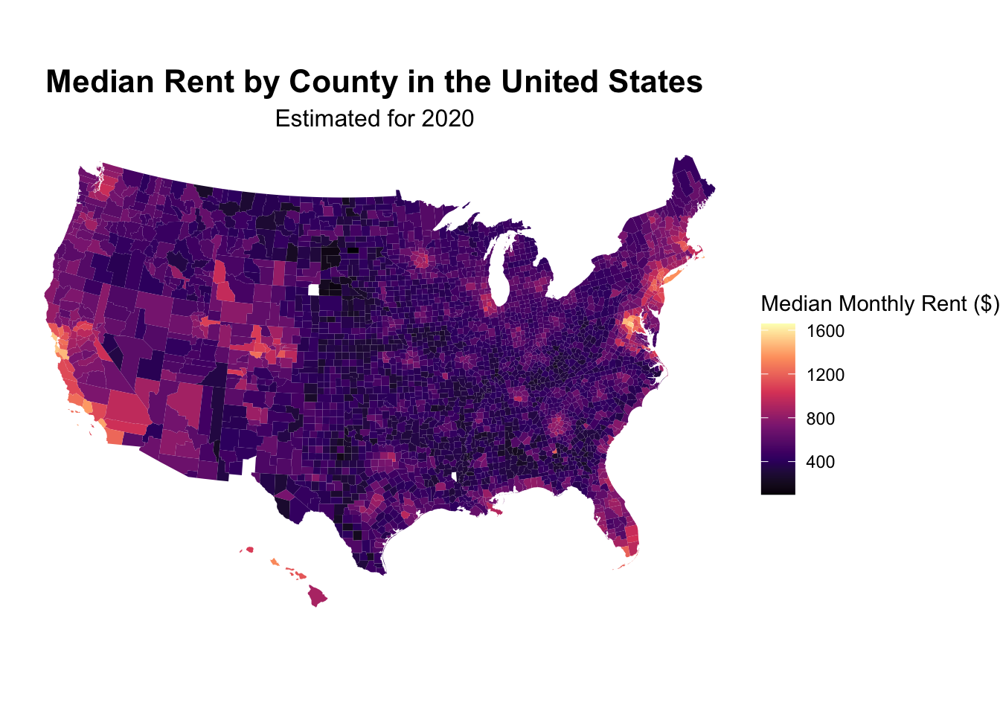

5 Spatial Viz
Use this file to generate a professional looking spatial visualization. The visualization will not perfect the first time but you are expected to improve on it throughout the semester especially after covering advanced topics such as effective viz.
5.0.1 Spacial Vizualization: Exercise #10
Construct county-level maps of median_rent and median_age.
Code
# Wrangle the Data
elections_by_state <- elections_by_state |>
filter(state_abbr != "DC") |>
select(state_name, state_abbr, repub_pct_20) |>
mutate(repub_20_categories =
cut(repub_pct_20,
breaks = seq(30, 70, by = 5),
labels = c("30-34", "35-39", "40-44", "45-49",
"50-54", "55-59", "60-64", "65-70"),
include.lowest = TRUE))
elections_by_counties <- elections_by_counties |>
select(state_name, state_abbr, county_name, county_fips,
repub_pct_20, median_age, median_rent) |>
mutate(repub_20_categories =
cut(repub_pct_20,
breaks = seq(0, 100, by = 10),
labels = c("0-9", "10-19", "20-29", "30-39", "40-49",
"50-59", "60-69", "70-79", "80-89", "90-100"),
include.lowest = TRUE))Code
long lat group order region subregion
1 -87.46201 30.38968 1 1 alabama <NA>
2 -87.48493 30.37249 1 2 alabama <NA>
3 -87.52503 30.37249 1 3 alabama <NA>
4 -87.53076 30.33239 1 4 alabama <NA>
5 -87.57087 30.32665 1 5 alabama <NA>
6 -87.58806 30.32665 1 6 alabama <NA>Code
long lat order hole piece group id
1 1225889 -1275020 1 FALSE 1 0500000US01001.1 01001
2 1235324 -1274008 2 FALSE 1 0500000US01001.1 01001
3 1244873 -1272331 3 FALSE 1 0500000US01001.1 01001
4 1244129 -1267515 4 FALSE 1 0500000US01001.1 01001
5 1272010 -1262889 5 FALSE 1 0500000US01001.1 01001
6 1276797 -1295514 6 FALSE 1 0500000US01001.1 01001Code
# Add 0's at the beginning of any fips_code that's fewer than 5 numbers long
# Don't worry about the syntax
elections_by_counties <- elections_by_counties |>
mutate(county_fips = as.character(county_fips)) |>
mutate(county_fips =
ifelse(nchar(county_fips) == 4, paste0("0", county_fips), county_fips))Code
# Create A County-Level Map of median_rent
library(ggplot2)
library(viridis) # For better color palettes
ggplot(elections_by_counties, aes(map_id = county_fips, fill = median_rent)) +
geom_map(map = county_map) +
expand_limits(x = county_map$long, y = county_map$lat) +
coord_equal() +
scale_fill_viridis_c(name = "Median Monthly Rent ($)", option = "magma") + # Using a viridis palette
theme_void() + # Cleaner background
theme(legend.position = "right",
plot.title = element_text(hjust = 0.5, size = 16, face = "bold"), # Centered, larger title
plot.subtitle = element_text(hjust = 0.5, size = 12), # Centered subtitle
plot.caption = element_text(hjust = 0.5, size = 10, color = "black")) + # Left-aligned caption
labs(title = "Median Rent by County in the United States",
subtitle = "Estimated for 2020",
caption = "Source: Federal Election Commission (2020)")
The “Median Rent by County in the United States’ visualization helps us understand the spatial patterns of median monthly rent across the United States at the county level in 2020. It highlights regional disparities and the influence of living in a coastal and/or metropolitan areas on housing costs. The lightest areas on the map, representing the highest median monthly rents, are predominantly concentrated along the coasts. Additionally, major inland metropolitan areas, such as Chicago, Denver, and Dallas, also exhibit higher median rents compared to their surrounding areas.
Note On Missing Data: It’s important to note that there are some counties that appear black on the map, indicating missing data for the median rent in those specific counties for the year 2020.